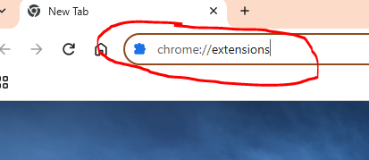
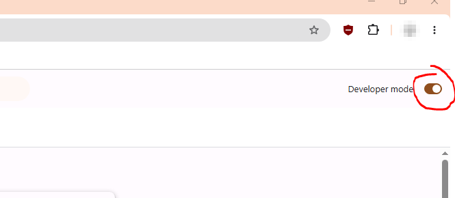
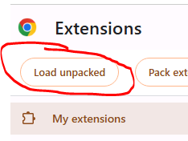
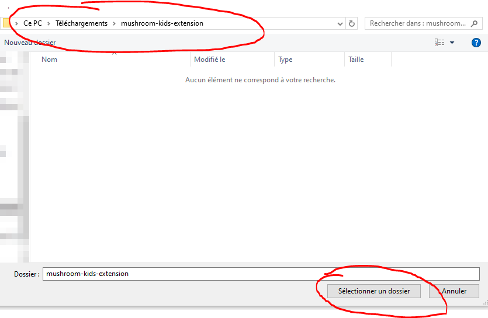
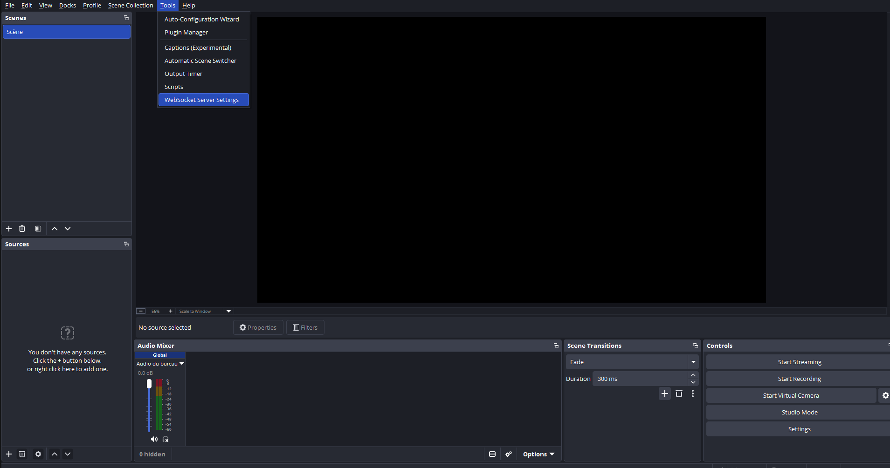
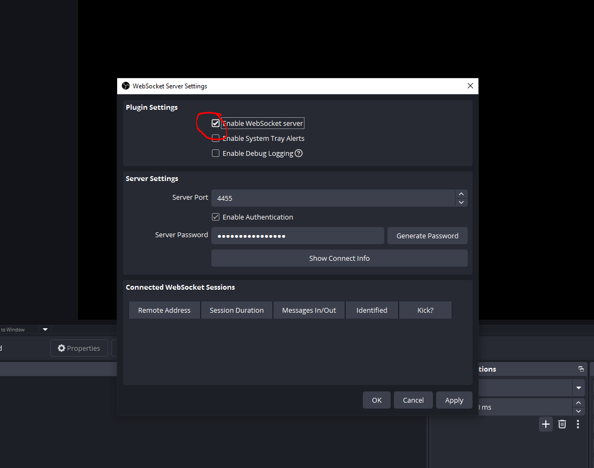
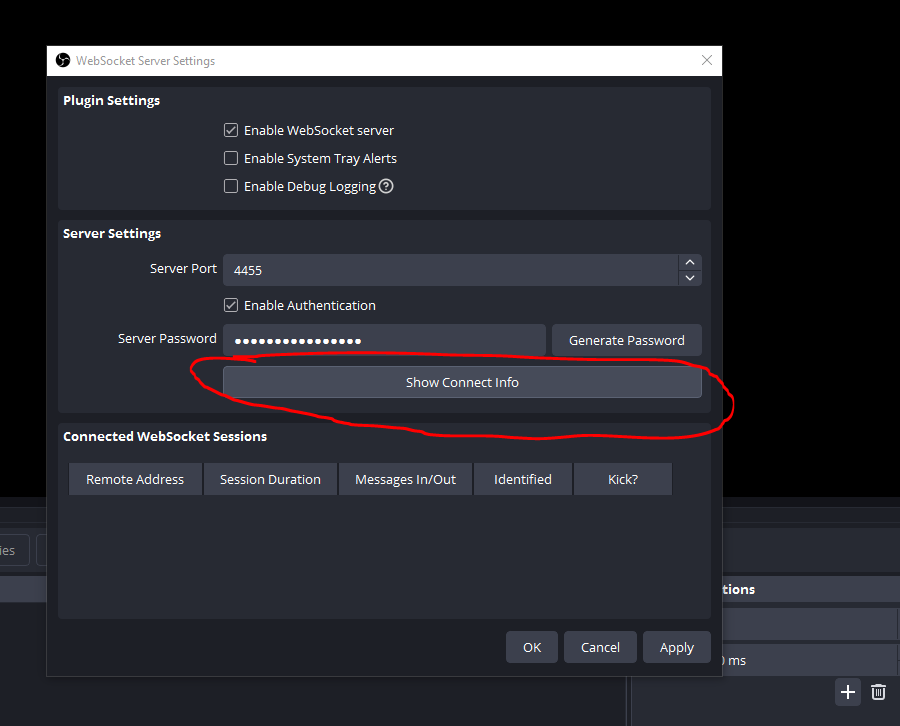
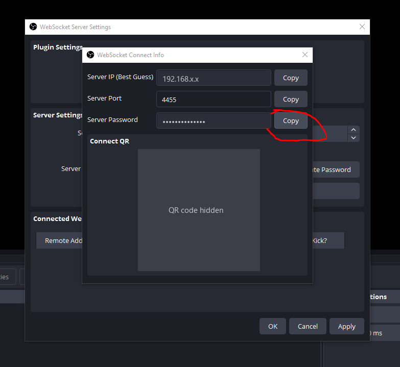
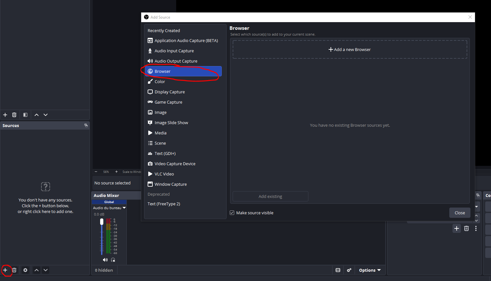

🍄 Mushroom Kids
Hai bé nấm bông sống ở góc dưới màn hình stream. Viewer cho hai bé ăn và ôm hai bé qua tip menu, và mỗi lần tip lại làm hai bé ấm lên.
Hoạt ảnh khi có tip menu
Tâm trạng lúc chờ, theo thanh độ ấm
Bấm phím F, C, H hoặc J trên bàn phím, hoặc bấm vào nút. Nếu có nhiều tip liên tiếp, hai bé sẽ làm lần lượt từng cái. Khung hình ở đây giống cả màn hình stream: bé nhảy ra giữa màn hình để đập tay.
🌡️ Thanh độ ấm
- Chỉ các món Feed, Cuddle và high five mới làm thanh đầy lên, theo số token đã tip: +25 mỗi lần feed, +50 mỗi lần cuddle, +40 mỗi lần high five trong ví dụ này.
- Thanh đầy khi đạt 2000 token. Streamer tự chọn con số này và giá của từng món.
- Thanh không bao giờ tự giảm. Streamer làm trống thanh khi muốn, ví dụ lúc bắt đầu stream.
- Càng ấm, hai bé trông càng vui lúc chờ. Dưới 10% thì hai bé bị lạnh và run.
Bạn cần: máy tính có Chrome và OBS (bản 28 trở lên). Khoảng 15 phút.
Không cần cài phần mềm nào khác, không cần tài khoản hay mật khẩu Stripchat. Mọi thứ chạy trên máy của bạn, không có dữ liệu nào bị gửi đi đâu.
1 Tải tiện ích Mushroom Kids
- Mở thư mục Tải xuống (Downloads), bấm chuột phải vào tệp
mushroom-kids-extension.zip→ Giải nén tất cả (Extract All) → Giải nén. - Bạn sẽ có thư mục
mushroom-kids-extension. Đừng xoá thư mục này sau khi cài: Chrome cần nó.
2 Cài tiện ích vào Chrome
- Gõ
chrome://extensionsvào thanh địa chỉ rồi bấm Enter.
- Bật Developer mode (Chế độ dành cho nhà phát triển) ở góc trên bên phải.

- Bấm Load unpacked (Tải tiện ích đã giải nén).

- Chọn thư mục
mushroom-kids-extensionrồi bấm Chọn thư mục (Select Folder).Cửa sổ trông trống trơn là bình thường: Chrome chỉ hiện thư mục, không hiện tệp bên trong.
- Thẻ Mushroom Kids xuất hiện.

- Bấm biểu tượng mảnh ghép 🧩 cạnh thanh địa chỉ, rồi bấm cái ghim cạnh Mushroom Kids để biểu tượng của nó luôn hiện.

3 Bật WebSocket trong OBS
Đây là cách để tiện ích "nói chuyện" với OBS trên máy của bạn.
- Trong OBS, mở menu Tools (Công cụ) → WebSocket Server Settings.

- Tick Enable WebSocket server. Giữ cổng 4455 và giữ Enable Authentication được tick. Bấm Apply.

- Bấm Show Connect Info.

- Bấm Copy cạnh Server Password để sao chép mật khẩu.

Mật khẩu này chỉ dùng trên máy của bạn. Đừng gửi nó cho ai, và đừng để nó hiện trên stream.
4 Nối tiện ích với OBS
- Bấm biểu tượng Mushroom Kids trên Chrome. Bấm lá cờ Việt Nam ở góc trên bên phải để chuyển sang tiếng Việt.
- Dán mật khẩu vào ô Mật khẩu WebSocket rồi bấm Lưu.
Ảnh minh hoạ sẽ được thêm sau
- Dòng trên cùng chuyển sang màu xanh: OBS: đã kết nối.
Ảnh minh hoạ sẽ được thêm sau
5 Thêm hai bé vào OBS
Trước tiên, tạo địa chỉ cho OBS ở đây:
Mật khẩu chỉ nằm trên máy của bạn: trang này không gửi nó đi đâu cả.
- Trong OBS, ở ô Sources (Nguồn), bấm + → Browser (Trình duyệt). Đặt tên Mushroom Kids rồi bấm OK.

- Trong cửa sổ hiện ra:
- Bỏ tick ô Local file.
- Dán địa chỉ vừa sao chép vào ô URL.
- Width =
1920, Height =1080(hoặc đúng kích thước khung hình OBS của bạn). - Bấm OK.
Ảnh minh hoạ sẽ được thêm sau - Hai bé xuất hiện ở góc dưới màn hình, nền trong suốt. Không cần kéo giãn nguồn này: cứ để nó phủ cả màn hình, vì hai bé sẽ nhảy ra giữa màn hình khi có high five.
Ảnh minh hoạ sẽ được thêm sau
6 Thêm các món vào tip menu Stripchat
Thêm các món này vào tip menu của bạn, với giá bạn muốn:
| Feed the kids | hai bé ăn 🍪 |
| Cuddle the kids | hai bé ôm nhau 🤗 |
| Bibi high five | bé mũ kem đập tay với bạn ✋ |
| Pouic high five | bé mũ xanh bạc hà đập tay với bạn ✋ |
Trong tiện ích, ở ô giá (tk) cạnh mỗi món, hãy điền đúng giá của món đó trong tip menu. Mỗi lần món được tip, số token này được cộng vào thanh độ ấm của hai bé. Thanh đầy khi đạt 2000 token (bạn có thể đổi con số này trong tiện ích, phần Thanh độ ấm), và trên stream thanh hiện phần trăm. Nhớ bấm Lưu.
7 Thử
- Trong tiện ích, bấm 🍪 Feed: hai bé ăn trong OBS. Thử cả 🤗 Cuddle, ✋ 1 và ✋ 2.
Ảnh minh hoạ sẽ được thêm sau
- Mở trang stream Stripchat của bạn trong Chrome. Nếu trang đã mở từ trước khi cài tiện ích, bấm F5 để tải lại.
- Khi có người tip một món, hai bé sẽ phản ứng, và tip đó hiện trong Hoạt ảnh gần đây của tiện ích.
🛠️ Gặp trục trặc?
Tiện ích ghi "sai mật khẩu OBS"
Sao chép lại mật khẩu ở bước 3, dán vào tiện ích và bấm Lưu. Nếu bạn đã đổi mật khẩu trong OBS, hãy tạo lại địa chỉ ở bước 5 và dán lại vào nguồn Mushroom Kids.
Tiện ích ghi "không kết nối được với OBS"
OBS phải đang mở, và WebSocket phải được bật (bước 3). Sau đó bấm nút ↻ trong tiện ích.
Có tip nhưng hai bé không phản ứng
Kiểm tra tên món trong tip menu có giống tên trong tiện ích không (bước 6). Bấm F5 trên trang Stripchat. Trang Stripchat phải được mở trong Chrome có tiện ích.
Hai bé không hiện trong OBS
Chuột phải vào nguồn Mushroom Kids → Properties: kiểm tra địa chỉ trong ô URL, rồi bấm Refresh (Làm mới).
Hai bé ngồi sai chỗ
Chọn góc khác ở bước 5, sao chép địa chỉ mới và dán lại vào nguồn Mushroom Kids.
🧹 Gỡ bỏ
Muốn bỏ hai bé? Chỉ mất một phút, mọi thứ trở lại như cũ:
- Vào
chrome://extensions, bấm Remove (Xoá) ở thẻ Mushroom Kids. - Trong OBS, chọn nguồn Mushroom Kids và xoá nó.
- Nếu muốn, tắt lại WebSocket ở bước 3.